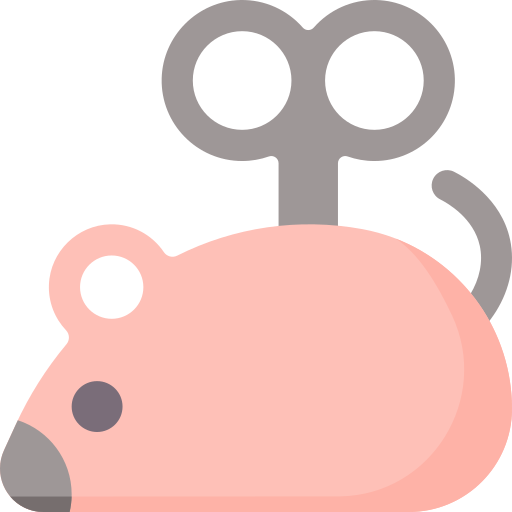
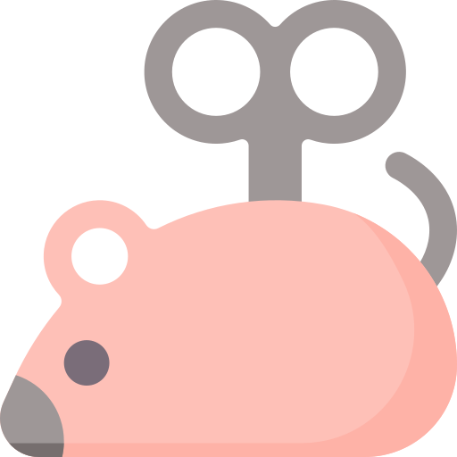

Hi, I'm Bodhi!
Coolest cat on the planet
I am an advoCAT for my fellow felines. My mission is to inform humans about our health and habits.
About Cats
What makes us so special, you ask?There are tons of reasons why cats are pawsome! We are designed to keep ourselves clean. We can be super chill once we establish a connection with humans and if we like you, you can even pet us too! Isn’t that great? Well now that learned why we the best, check out a few interesting facts about cats and why it’s important for all humans to do their research before considering our company.
to cuddle
stress
creatures
Cat Facts
Why cats are so cool!Cat Stats
Sleeping
70%Yawning
100%Ambidextrous
60%Self-Grooming
50%Water Retention
75%Tiger DNA
95.6%National Female Population
51%National Male Population
49%Cat Breeds
Persian Cat
Average Weight: 7-10lbsMaine Coon Cat
Average Weight: 13-18lbsExotic Shorthair Cat
Average Weight: 8-12lbsSiamese Cat
Average Weight: 8-15lbsAbyssinian Cat
Average Weight: 9-17lbsRagdoll Cat
Average Weight: 15-20lbsBirman Cat
Average Weight: 8-15lbsAmerican Shorthair Cat
Average Weight: 11-15lbsOriental Cat
Average Weight: 8-12lbsSphynx Cat
Average Weight: 6-12lbsPeterbald Cat
Average Weight: 7-14lbsDomestic Longhair Cat
Average Weight: 8-15lbsDomestic Shorthair Cat
Average Weight: 6-16lbsTabby Cat
Average Weight: 8-12lbsHimalayan Cat
Average Weight: 7-14lbsBurmese Cat
Average Weight: 6-12lbsCat Life Span
This is an outline of the average life span of a cat.With lots of love, we may live longer!
Kitten
Human Equivalency: 0 - 10 years oldJunior
Human Equivalency: 12 - 24 years oldAdult
Human Equivalency: 28 - 40 years oldMature
Human Equivalency: 44 - 56 years oldSenior
Human Equivalency: 60 - 72 years oldSuper Senior
Human Equivalency: 76 - 116 years oldCat Myths
The truth behind all felinesUnfortunately, there is a lot of misinformation about my furry friends. Here are just some common misconceptions about us that need some serious myth busting.
Do cats drink milk?

Do all cats hate water?
Are black cats bad luck?
Should Moms-to-be avoid cats?
Do cats only purr when they're happy?
Do cats always land on their feet?
Cats Are Cute!
No, really, we truly are!Check out how adorable we can be. No one can resist the company not to mention the tons of pet hair we leave behind—just a token of our affection! Scroll through and look at which kind of these furry friends you would love to bring home!
Thank you for stopping by. We hope this guide brings a new profound love for cats! We are here to make your life pawsome!